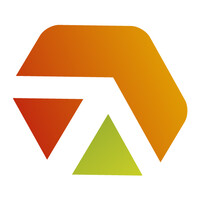

Naoki Yokoyama
Cientista de Dados Sênior
Cientista de Dados com grande capacidade analítica tendo mais de 15 anos de experiência como gestor de empresas.
Sólido conhecimento no pipeline de engenharia e ciência de dados.
Domínio nas linguagens Python, R e Javascript.
Criação de modelos de machine learning (supervisionados, não supervisionados).
Criação de modelos em redes neurais e deep learning (usando tensorflow). Metodologia Scrum, Crisp-DM e Kanban.
Conhecimentos de banco de dados relacionais (SQL) e MongoDB, Elasticsearch (NOSQL).
Experiência
Deloitte
Dez/2021 - Atual
Cientista de dados Sênior
Ambiente Azure Machine Learning
Ambiente Azure
Databricks
Lider de Projeto
Construção de modelos Preditivos
Metodologia Agil, CrispDM, Kanban
Spark
Banco de Dados Relacional (Microsoft SQL Server)
 EEmovel Inteligência Imobiliária
EEmovel Inteligência Imobiliária
Ago/2021 - Dez/2021
Cientista de dados Pleno
Ambiente AWS
Consumo de dados em bancos SQL e NOSQL (elasticsearch e mongodb)
Construção de modelo preditivo
Deploy de modelos
Versionamento usando Git
Construção de imagem usando docker
Metodologias como Kanban, Scrum e Crisp-DM
Lider Projeto
HVAR Consulting
Mai/2021 - Ago/2021
Cientista de dados
Versionamento de dados com git, dvc
Ambiente Google Cloud Plataform
NLP natural language processing
Machine learning e Deep Learning
Controle de versões
Criação de API
AI Consulting
Dez/2020 - Mai/2021
Cientista de dados
ETL
Conexão em banco de dados
Limpeza de dados
Treinamento e construçaõ de modelos preditivos
Integração de dados em cloud computer
Scrap e Crawler
Criação de Dashboard usando o DASH
Consumir API
Sunsaki
Jan/2007 - Maio/2020
Socio / Gestor Empresarial
Administrar, gerenciar toda uma operação de um restaurante de médio porte.
Financeiro, Fiscal, RH, Marketing, Estoque.
Liderar equipes de diversos setores.
Implantação de soluções tecnologicas como ERP, CFTV, Banco de dados, CRM, infraestrutura de rede.
Negociação junto a fornecedores e intituições financeiras
Fazer parte de associação comercial da região local
Trabalhar em conjunto com a equipe de marketing a fim de melhorar suas campanhas online e offline
Formação acadêmica
Instituto Infnet
MBA em Data Science, Data Analytics e Machine Learning
 Faculdade VINCIT
Faculdade VINCIT
Pós-graduação Lato Sensu
 Unidombosco
Unidombosco
Graduação em Gestão da Tecnologia da Informação
 IBMEC
IBMEC
Graduação Administração de Empresas
Licenças e certificados
Microsoft
Azure AZ 900
Amazon Web Service
AWS Cloud Pratictioner
IBM
IBM Data Science
Skills
Language
Database
SO
Cloud
Tools
Library